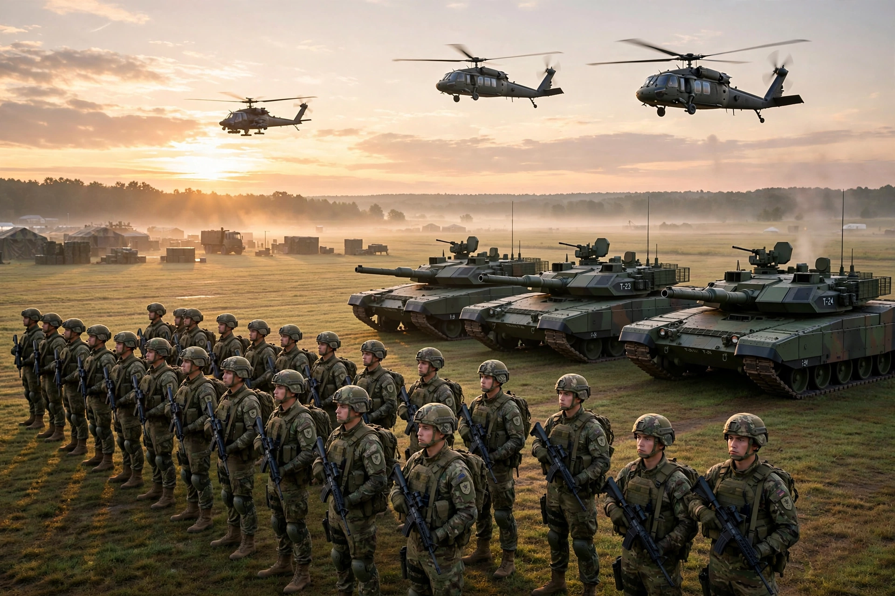

An army, ground force or land force is a fighting force that fights primarily on land. In the broadest sense it is the land-based military branch of a nation, as distinct from a navy, which operates at sea, and an air force, which operates in the air. The word derives from Latin arma, "arms", via Old French armée.

Armies are organised hierarchically: squads/sections, platoons, companies, battalions, regiments/brigades, divisions, corps and field armies, commanded by officers of increasing rank. Combat arms (infantry, armour, artillery, engineers) are supported by logistics, signals, medical and other services. Personnel may be professional volunteers or conscripts.
Standing armies emerged with early states — Egyptian, Assyrian, Persian and Roman forces such as the legions. Gunpowder, mass conscription after the French Revolution, railways, mechanisation and combined-arms doctrine transformed armies in the 19th and 20th centuries. The largest armies today, by active personnel, include those of China, India, the United States, North Korea and Russia.
Typical equipment includes small arms, artillery, tanks and other armoured fighting vehicles, helicopters and air-defence systems.